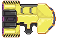
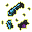
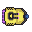
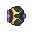
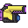

Welcome to MantleWorks Management
Hello Valued Franchisee! Thank you for joining the MantleWorks Family, you've been assigned your mining fleet, and your first asteroid belt! Be sure to clear it quickly for a pay bonus!
You'll start by controlling the refinery, which has autonomous drones:
| Ship: | Refinery | Drone |
|---|---|---|
| Image: |  | |
| Selection key: | 1 | Autonomous |
You'll need to move the refinery so the drones can collect metal from asteroids and wreckages.
You can select controllable ships by:
- clicking and dragging, to select all controllable ships in an area; or
- using a selection key, to select all ships of a particular type.
Then right-click where you'd like them to go -- either on the main screen or on your minimap.
You can press 'D' to deselect everything.
The minimap will show you where it detects asteroids or wreckages. As you travel, your sensors will reveal more details.
| Resource: | Asteroid | Wreckage |
|---|---|---|
| Image: |  |
 |
The refinery crew will be able to analyse the technology in the wreckage, which will let you unlock new types of ships for your fleet:
| Ship: | Gunship | Torpedo ship | Laser fighter |
|---|---|---|---|
| Image: |  |  |  |
| Selection key: | 2 | 3 | 4 |
But I'm sure you won't need those for anything.
START! Make sure you collect all the resources!